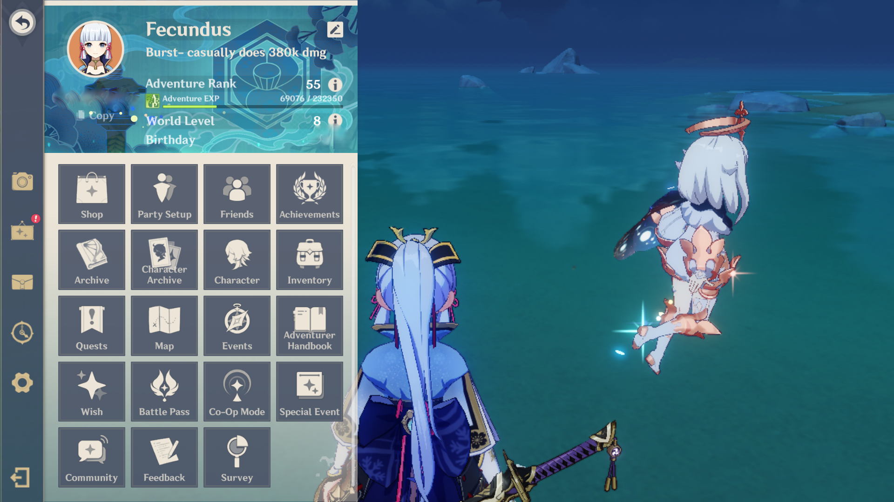

Welcome traveler! I'm sure you're very confused on how to play this game, and what's going on; Fear not! For you will soon be an expert at Genshin!
As you start the game, you will be asked to follow Paimon. Paimon will be your guide, and can help you when you are lost. Once you finish the tutorial, you will be able to access the Paimon Menu. For mobile, click the icon at the top left of your screen, and for PC you can press the 'esc' key. As you play and fully unlock the game, more icons will show up around your screen. Familiarize yourself with them, as they will be useful! If you can't quite remember the keys for them all, you can always access them through the Paimon Menu.
Each character in Genshin has three attacks; Normal/Charged Attack, Elemental Skill, and Elemental Burst. To attack, press the large attack button at the bottom right of your screen. To unleash your Elemental Skill, press the second largest button just left of the attack button. Doing so will generate energy for your character. Once you have enough energy, you can use your Elemental Burst by clicking the smallest button all the way to the left.
Note: Each character has a different energy cost for their burst. If you find you aren't able to get the burst up fast enough, consider your team composition. If its a support, replace your Timepiece artifact with Energy Recharge. If it's your main damage dealer, try to include someone of the same element in order to give them energy
As you play the game, you will get artifacts and weapons from chests. Artifacts are perhaps the number one contributor to how good your character is.
First, let's start with some vocabulary. You have five artifacts; Flower, Plume, Sands, Goblet, and Circlet. Flower will always be HP, and Plume will always be ATK. The other three artifacts will vary widely with the individual character. As you begin, you will have rather awful artifacts. Still attempt to use the best artifacts you have. For instructions on what artifacts are best for you character, I would highly suggest KeqingMains.com
Now that we know the basics, lets get into some more advanced topics: Substats. Substats are the smaller stats you will see on your artifacts. Once you reach Adventure Rank 45, you will be able to farm artifacts. Don't worry about substats until after you reach AR 45. Once you have fully unlocked all artifact domains, you should start farming for your main DPS. Your DPS should only have 5 star artifacts! If an artifact does not have Crit Rate and Crit DMG on it, do not use it! Strive for every artifact to have at least 5% Crit Rate and 10% Crit DMG. This will take months to acheive, but it's just how it goes.
Crit Rate and Crit DMG are essential for your DPS to do dmg. Without a ratio of 1:2, your character will not be good (2 Crit DMG for every Crit Rate). Say you have 50% Crit Rate. This means that half of the time, you will be critting. Say you have 100% Crit DMG. This means that every time you crit, you will do twice as much dmg. So, with 50% Crit Rate and 100% Crit DMG, every other attack will do twice as much dmg. Try to strive for at least 60:120 Crit Stats.
There are five weapon types in Genshin; Polearm, Sword, Claymore, Bow, and Catalyst. Each weapon has its own strengths and weaknesses, and you will probably soon find you like some more than others. Typically, 4 star weapons will be the go-to, as 5 star weapons are hard to obtain, and 3 star weapons are weaker. There are some excpetional 3 star weapons out there (Harbringer of Dawn, Thrilling Tales of Dragon Slayers,White Tassel), however you should strive to have 4 star weapons on most of your characters. Yet again, KeqingMains has in detail explanations of what the best weapons are for your character, so check there.
Note: the order I listed the weapon types in goes from order of general best to worst. Specifically, Bow and Catalyst users have many issues that HoYoverse has yet to fix
Talents are another huge source of dmg for your character. Don't worry about talents until your characters are around lvl 40-50, at which point they should be a priority. Make sure to properly prioritze them. For example, if my support is only using their Burst, there is no need to level up their NA or Skill. A DPS will generally have the highest talents of your whole team. Talents can be farmed everyday in Talent Domains, however do note that the talent books received changes everyday. On Sundays you can farm any talent book you need.
Genshin Impact is a gacha game. This means that, through the use of in-game currency, you obtain weapons and characters through a type of gambling. In Genshin, this is called wishing. A wish can be obtained for 160 Primogems, 75 Masterless Stardust, or 5 Masterless Starglitter.
There are three banners; Rate Up, Weapon, and Standard. Every update has two phases. Each phase has a different Rate Up and Weapon banners, while the Standard Banner never changes.
Pity is the term used to refer to how many wishes are required to reach a 4/5 star item. However, this is only Hard Pity. There is also Soft Pity. This means that the closer you get to Hard Pity, the higher the chance of getting a special item. For all banners, 4 star Hard Pity is 10 wishes. Most of the time, it will only take about 7 wishes to get a 4 star item. 5 star pity changes depending on the banner.
Each Rate Up Banner has one featured 5 star and three featured 4 stars. 5 star Hard Pity is 90, and Soft Pity is around 70. 4 star Hard Pity is 10. Once you get a 4 star, there is a 50% chance it will be one of the featured 4 stars. If it is not, the next time you get a 4 star it is guaranteed to be one of the featured three. Similarly, once you get a 5 star, there is a 50% chance it is the featured 5 star. If it is not, the next time you get a 5 star (regardless if it is in a new phase) it is guaranteed to be the featured 5 star. If you are confused, here is an example. In update 2.5, the 5 star character Yae Miko was released. I wished on her banner, and once I reached pity, I got a 5 star. I lost the 50/50, and got Mona. I saved my wishes until 5 star Kamisato Ayaka was rerun in 2.6, and I wished on her. Once I reached pity, I was guaranteed to get her (and I did).
The Weapon Banner has two featured 5 star weapons. Using the Epitomized Path, you can choose which one you would prefer. 5 star Hard Pity is 80 wishes, and Soft Pity is around 60. 4 star Hard Pity is 10 wishes. Once you get a 5 star, there is a 75% chance it will be one of the two featured 5 star weapons. If you lost the 75/25, it will be one of the standard 5 star weapons. If you win, there is then a 50/50 chance you will get your prefered weapon. Every time you don't get the weapon of your choosing, you gain a Fate Point. If after obtaining two Fate Points you have yet to get your chosen 5 star weapon, you are guaranteed to get the weapon of your choosing. Fate Points (unlike 50/50 guarantee) do not carry over banners.
Do to the fact that there are no featured weapons or characters on the Standard Banner, there is no 50/50 system. Hard pity is 90, and Soft Pity is 70. 4 star Pity is 10. Once you reach pity, you get a random character / weapon from the pool. Do NOT spend primogems on the standard banner